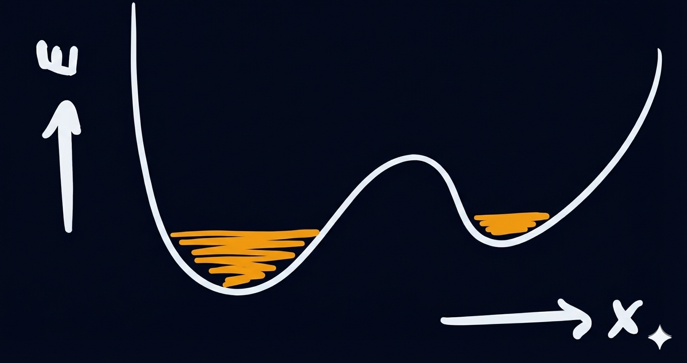

CUATRO RÍO Y SANGRE
Toma también del agua del río, y derrámala en tierra seca; y el agua que tomares del río se volverá sangre en la tierra.
- ÉXODO 4:9
El Flujo de la Vida
TODA LA VIDA SE MUEVE. AUNQUE LOS ANIMALES HACEN ESTE PUNTO MÁS directamente con todas sus diversas payasadas, una flor que se abre o una extensión de bacterias que se propaga en una placa de Petri son ejemplos igualmente buenos de cómo los seres vivos cambian su forma y ubicación a lo largo del tiempo para crecer, desarrollarse y comportarse. Al mismo tiempo, es claro que muchas cosas que se mueven no están vivas, lo que significa que si vamos a pensar en el movimiento como algo parecido a la vida, tendremos que ser más específicos sobre el tipo de movimiento que hace funcionar a la vida.
La primera pista proviene de notar que hay algunos tipos de movimientos comunes vistos en el mundo en general que los seres vivos no exhiben. Un guijarro desalojado por un excursionista puede rodar colina abajo, pero también puede rodar de nuevo hacia arriba si alguien le da una patada lo suficientemente buena en la otra dirección. Un yoyó puede girar en sentido horario o antihorario sobre su eje, dependiendo de en qué dirección alguien lo haga girar. De hecho, todos los movimientos mecánicos más básicos —subir o bajar, girar de esta manera o aquella— parecen ser igualmente capaces de correr en ambas direcciones. Sin embargo, cuando ahora miramos el proceso de un árbol creciendo a partir de una semilla, o de un embrión desarrollándose hasta convertirse en un bebé recién nacido, la simetría que notamos en un mundo de bolas de billar rebotando de ida y vuelta de repente no se encuentra por ninguna parte. Los árboles imponentes no se "des-crecen" hasta convertirse en semillas diminutas, y las personas generalmente no se vuelven más jóvenes con el tiempo. Al menos parte de lo que la vida parece estar haciendo, dinámicamente, es una calle de sentido único, y la pregunta clave es si esto es un mero caso de casualidad, o si de alguna manera nos revela algo central sobre lo que la vida está logrando a nivel físico.
Nuestra búsqueda de una respuesta en este caso tiene que comenzar con la energía. Desde la perspectiva de la física, todo movimiento requiere energía. En términos matemáticos, la energía es simplemente un concepto introducido para llevar una buena contabilidad sobre exactamente cuánto movimiento pueden impartirse y absorber entre sí diferentes trozos de materia. Aún así, aunque la energía de algún tipo se encuentra en todas partes, no siempre se despliega de la misma manera. Un tronco de madera recién cortado y una tetera de agua hirviendo pueden tener la misma cantidad de energía, pero solo uno de ellos está caliente al tacto. Una tetera humeante y un motor de combustión interna pueden estar ambos abrasadores, pero solo uno de ellos puede hacer girar las ruedas de un camión. En ambos casos, la diferencia significativa resulta ser qué está haciendo la energía en el sistema y hacia dónde va. Del mismo modo, hacer un seguimiento de la energía nos ayudará a explicar por qué la vida es tan mala corriendo hacia atrás, y comenzará a revelar un papel especial para la energía en la física de los seres vivos.
Energía, Calor y la Flecha del Tiempo
LAS PELÍCULAS DE CIENCIA FICCIÓN, LAS BATERÍAS Y LAS REDES ELÉCTRICAS nos han ayudado a acostumbrarnos a la idea de la energía como una especie de sustancia maravillosa que se puede almacenar en un contenedor y mover de un lugar a otro. Pero vale la pena recordarnos de dónde sacamos la idea de la energía en primer lugar. Como discutimos brevemente en el Capítulo 2, desde la perspectiva de la mecánica newtoniana, la energía no es algo que se mide o manipula directamente en experimentos; en cambio, se calcula a partir de otras cantidades más básicas, como la posición, la masa y el tiempo, que sí se miden. La idea inicial para Newton es la de fuerza: los trozos de materia ejercen fuerzas entre sí que pueden dar lugar al movimiento. La energía entra en escena porque las fuerzas básicas que típicamente actúan entre las diferentes piezas de cualquier ensamblaje de materia tienen la propiedad matemática especial de ser conservativas. Una fuerza conservativa simplemente tiene la propiedad de que si se usa para detener el movimiento, entonces debe ser capaz de volver a poner en marcha la misma cantidad de movimiento. Si una bala de cañón se dispara verticalmente al aire, comienza moviéndose a alta velocidad, pero en el punto más alto de su vuelo su velocidad llega a cero (ya que acaba de dejar de moverse hacia arriba contra la gravedad y aún no se mueve hacia abajo). Lo que hace que la gravedad sea una fuerza conservativa es que (despreciando el efecto de la resistencia del aire, que discutiremos en un momento) este vuelo hacia arriba coloca la bola en un lugar desde el cual puede volver a caer y recuperar completamente su alta velocidad. En el lenguaje de la física, decimos que la bola comienza con mucha energía cinética (que es básicamente una medida de qué tan rápido se mueve), pero la cambia toda por energía potencial a medida que sube más y más contra la gravedad. En la cima del vuelo, la energía cinética ha ido a cero, pero la energía total ha permanecido igual.
Es útil pensar en la física en términos de conservación de la energía porque nos da una fuerte restricción sobre cómo pueden moverse las cosas que nos permite hacer predicciones. Por ejemplo, si nuestra bala de cañón experimenta cierta resistencia del aire, podemos notar que se mueve más lentamente cuando cae de regreso a la Tierra que cuando la disparamos por primera vez hacia arriba. Dado que pensamos que cada colisión individual entre la bala de cañón y las moléculas de aire circundantes implicó la acción de fuerzas conservativas, podemos inferir inmediatamente que parte de la energía cinética inicial de la bala de cañón debe haberse perdido en el aire durante el curso del vuelo. Cuando la energía se comparte de manera algo aleatoria como esta en las energías cinéticas de muchos movimientos microscópicos diferentes, lo llamamos calor.

La simetría de inversión temporal de la física newtoniana requiere que si es posible que el movimiento ocurra de una manera (como una pelota volando hacia arriba y desde la izquierda, para caer y aterrizar a la derecha), entonces también debe ser posible, para una elección alternativa adecuada de condiciones iniciales, conseguir que ocurra la versión de "rebobinado" de los eventos (como una pelota volando hacia arriba y desde la derecha, para caer y aterrizar a la izquierda).
Alguien que esté observando de cerca puede notar ya una forma adicional en la que el calor juega un papel importante en esta historia. Porque de hecho, si nuestra bala de cañón se dispara hacia arriba desde la superficie de la luna, donde no hay atmósfera, no esperaríamos ninguna pérdida de energía durante el vuelo por arrastre. En este caso, hay algo hermosamente simétrico en toda la trayectoria: el proyectil puede volar hacia arriba a alta velocidad y luego frenar hasta detenerse, o puede comenzar desde el reposo y caer hasta alcanzar la misma alta velocidad en la dirección opuesta cuando llega a la superficie de la luna. Estos dos movimientos se emparejan perfectamente entre sí porque son idénticos una vez que invertimos el orden temporal de los eventos y volteamos la dirección del movimiento al revés. En otras palabras, una película es el rebobinado hacia atrás de la otra. Un estudio directo de la estructura matemática de las leyes de Newton demuestra que esta simetría no es accidental, sino más bien, un requisito fundamental. Cualquier cosa que pueda suceder de acuerdo con las ecuaciones de movimiento implicadas por $F=ma$ (nuevamente, donde F es fuerza, m es masa y a es aceleración), hay una versión de rebobinado que no es menos posible.
Sin embargo, de vuelta en la Tierra, las cosas son preocupantemente diferentes. De alguna manera, a través de la introducción de la pérdida de calor debido a la fricción del aire, aparentemente hemos roto esta llamada simetría de inversión temporal en el movimiento que observamos, porque cuando nuestra velocidad inicial hacia arriba nos permite subir a cierta altura, no recuperamos completamente la misma velocidad en la dirección opuesta cuando caemos de regreso desde esa misma altura. Por supuesto, la resolución de este rompecabezas nos la sugiere lo que ya hemos señalado: si el aire está robando energía de la bala de cañón, entonces tenemos que tratar las moléculas de aire como parte del sistema que estamos rastreando. En este caso, debería ser posible, en principio, observar el rebobinado del vuelo de nuestra bala de cañón hacia arriba: solo necesitamos que el aire deje de resistir y comience a donar energía a la bala de cañón, para que adquiera algo de velocidad extra en el camino hacia abajo de la manera en que perdió velocidad por el arrastre en el camino hacia arriba. Si se pudiera obligar a todas las moléculas a moverse de la manera correcta, no habría ningún problema en absoluto desde la perspectiva de Newton: la energía se conservaría y todo estaría obedeciendo $F=ma$ todo el tiempo.
Lo absurdo de esta propuesta llama nuestra atención sobre algo sorprendente acerca de cómo funciona la resistencia del aire, a saber, ¡que siempre resiste! Cuando vuelas hacia arriba, la fricción empuja hacia abajo, y en tu camino de regreso hacia abajo, la fricción empuja hacia arriba. Este estado de cosas contrasta marcadamente con la gravedad, que empuja hacia abajo independientemente de hacia dónde vayas. Algo en la naturaleza de la fuerza de arrastre por fricción guarda el secreto para entender por qué se rompe nuestra simetría de inversión temporal, y para ver cuál es ese secreto, solo tenemos que preguntarnos por qué pensamos que es tan inverosímil que todas las moléculas de aire puedan conspirar repentinamente para ayudar a una pelota a acelerar mientras cae, a pesar de que regularmente se combinan para lograr el efecto opuesto y ralentizar las cosas.
La clave para desentrañar este rompecabezas se puede encontrar en nuestra descripción subyacente de las reglas físicas involucradas. Si las ecuaciones de movimiento newtonianas permiten que la resistencia del aire, en principio, funcione hacia atrás, entonces todo lo que deberíamos necesitar, para ver que suceda, es la capacidad de elegir las condiciones iniciales correctas con respecto a dónde está cada molécula, hacia dónde va y a qué velocidad. Y, sin embargo, si este tipo de fenómeno nunca, jamás se observa que ocurra, tenemos que inferir que hay algo de alguna manera extremadamente difícil en organizar esas condiciones iniciales, y que es extremadamente improbable que ocurran por accidente. Y el hecho de que nos sintamos obligados a recurrir a la idea de probabilidad nos dice que estamos en el camino correcto, porque la idea misma del calor que el arrastre por fricción pierde en el aire se basa en una noción de aleatoriedad en su definición. Esto significa que a pesar de que comenzamos hablando de cosas deterministas aparentemente muy predecibles como balas de cañón y fuerzas de arrastre, nuestra investigación sobre el origen de la ruptura de la simetría de inversión temporal nos ha llevado de vuelta a la idea de probabilidad, con el giro añadido de que ahora vamos a tener que comparar las probabilidades de diferentes caminos.
Disipación de Calor y la Relación de Crooks
LA VERSIÓN DE DIBUJOS ANIMADOS DE POR QUÉ LA RESISTENCIA DEL AIRE NUNCA corre hacia atrás es que muchas moléculas de aire separadas que se mueven de maneras aleatorias y no correlacionadas son mucho mejores para esparcir la energía que para concentrarla en un solo lugar. Piense en un grupo de personas de pie en un apiñamiento en el centro de un estadio de fútbol, cada una con su propia moneda. Cada minuto, se lanzan todas las monedas dos veces, y todos los que obtienen cara-cara dan un paso al norte, mientras que las personas cara-cruz dan un paso al este, y así sucesivamente. Después de unos veinte minutos, se hace evidente que el apiñamiento se está extendiendo y llenando más del estadio: cada individuo está realizando una caminata aleatoria, y después de suficiente tiempo, estas caminatas aleatorias generalmente llevan a todos los participantes a alejarse de sus puntos de partida. Eventualmente, esperamos que las personas se distribuyan más o menos uniformemente por todo el estadio, esencialmente porque la caminata aleatoria finalmente hace que cada configuración de personas a través del espacio sea igualmente probable, y hay muchas más configuraciones extendidas que apiñadas.
Es bastante fácil ver cómo funciona este proceso con las personas, y no mucho más difícil pensar en cómo puede suceder con la energía. Como hemos dicho, la energía se puede pensar como una cantidad conservada que se transfiere de un objeto a otro a medida que interactúan. Así, si un montón de energía se entrega como calor en una ubicación particular en un gas de muchas moléculas, cada colisión molecular es una oportunidad para que una pequeña parcela de esa energía salte de una ubicación a una adyacente. En un fluido de muchas partículas que se mueven más o menos aleatoriamente, el calor se difunde de la misma manera que las partículas y las personas que lanzan monedas pueden hacerlo; tenderá a extenderse y volverse más uniformemente distribuido con el tiempo. Si un montón de eventos raros y aleatorios sucedieran de la manera correcta todos a la vez, podrías ver el calor volver a juntarse; aún así, cuanto más dramático sea el efecto propuesto, menos probable es que ocurra un evento tan extraño.
Ya esta imagen nos ayuda a entender por qué la resistencia del aire siempre resiste. Cuando una bala de cañón choca con moléculas de aire e imparte parte de su energía a ellas, salen volando en direcciones aleatorias y el calor se difunde. Para ver que suceda lo contrario, uno necesitaría que los movimientos aleatorios de muchas moléculas cooperaran para que todas, por casualidad, empujaran en la misma dirección al mismo tiempo sobre la bala de cañón; en otras palabras, necesitarías que un volumen de aire caliente se volviera espontáneamente más frío que su entorno y comenzara a soplar concertadamente en una dirección particular. Este resultado, en términos crudos, es el equivalente a lanzar billones de billones de caras seguidas en una moneda justa: podrías esperar la edad del universo y más y nunca verlo suceder una vez.
Resulta que es posible ser preciso y riguroso sobre exactamente cuánto calor se necesita para crear una cierta cantidad de asimetría entre las películas de avance y rebobinado de un proceso físico. En un sentido, este resultado se remonta a la distribución de Boltzmann del Capítulo 3, porque se basa en una relación cuantitativa relacionada entre la temperatura de un sistema y el número de formas en que la energía se puede distribuir en él. Por otro lado, mientras que la distribución de Boltzmann da probabilidades relativas de estados en equilibrio térmico, ahora podemos hablar de las probabilidades relativas de películas, es decir, de secuencias de estados ordenadas en el tiempo llamadas trayectorias dinámicas. Hace cerca de dos décadas, Gavin Crooks del Laboratorio Nacional Lawrence Berkeley demostró una relación que gobierna estas probabilidades relativas de una manera cuantitativa y muestra cómo están conectadas con el flujo de calor. Para cada temperatura T, hay un número mayor que 1 llamado $b(T)$ que siempre aumenta a medida que T disminuye. Crooks demostró que si tomamos la probabilidad de una película hacia adelante y la dividimos por la probabilidad de la película de rebobinado correspondiente bajo las mismas condiciones, obtenemos
p(avance) / p(rebobinado) = b(T)Q
donde Q es la cantidad de calor liberado en el entorno durante la película hacia adelante. Esta ecuación establece que a cualquier temperatura dada, las películas que representan procesos que liberan cantidades positivas de calor son exponencialmente más probables que sus rebobinados invertidos en el tiempo (que en su lugar absorberían la misma cantidad positiva de calor). Además, la inclinación de este ascenso exponencial se vuelve mayor y mayor a medida que la temperatura del entorno se vuelve más y más fría. En otras palabras, toda ruptura de equivalencia entre avance y retroceso debe pagarse con calor, y cuanto más calor pagues yendo hacia adelante, más fuertemente puedes favorecer esa película sobre su rebobinado.
En esencia, la ecuación de Crooks solo está cuantificando algo que ya expresamos intuitivamente arriba, a saber, que una vez que el calor se difunde aleatoriamente lejos de ti, es poco probable que esta misma nube de energía que se expande vuelva a trazar repentinamente sus pasos y se reúna de nuevo por accidente. Esta comprensión básica ciertamente ayuda a dar sentido a las balas de cañón voladoras y similares. Cuando una roca rueda cuesta abajo y se detiene, ha convertido la energía potencial gravitacional en energía cinética de movimiento, y luego ha convertido esa energía en calor que se pierde irreversiblemente en el entorno. Por lo tanto, la roca puede detenerse y quedarse quieta. Sin embargo, lo que es insatisfactorio de este ejemplo es que es algo de una sola vez: la roca rueda y se detiene y la historia parece haber terminado. Además, realmente no necesitábamos una declaración elaborada sobre películas y rebobinados para explicar que la materia tiende a tratar de reducir su energía con el tiempo; la distribución de Boltzmann ya nos lo dijo.
Las implicaciones más llamativas de la ecuación de Crooks pasan a primer plano cuando consideramos sistemas que no están asentados en baja energía. Ya sea en biología o en el mundo natural en general, hay infinitos ejemplos de sistemas que rompen la simetría de inversión temporal bastante violentamente, y sin embargo son el polo opuesto de una roca que se atasca en el fondo de un barranco. Cada vez que late un corazón humano, empuja el fluido de tal manera que la sangre rica en oxígeno en las arterias fluye en una dirección, y la sangre pobre en oxígeno en las venas fluye en otra, pero la energía total de la sangre no sube ni baja. De manera similar, si seguimos un poco de agua de océano a través de una ronda de evaporación, lluvia y derrame cuesta abajo de regreso al mar, vemos que su energía al final del circuito es la misma que al principio; no obstante, la dirección del movimiento es inconfundible, y la película de rebobinado (con agua de lluvia en el suelo volando hacia las nubes) parece cómicamente imposible. Aún más impresionantemente, cuando un árbol crece a partir de una semilla, sube solo más alto en energía con el tiempo, desarrollándose implacablemente en una dirección y negándose a correr hacia atrás por donde vino y esconderse bajo tierra. Las dunas de arena son más primitivas que las plantas, pero igualmente notables a este respecto: cuando el viento comienza a soplar, se apilan alto y almacenan grandes cantidades de energía potencial gravitacional.
Cada uno de estos ejemplos implica un proceso de movimiento o transformación que parece muy direccional en el tiempo. Esto significa, según Crooks, que cada caso tiene que implicar la generación de calor (o al menos, si somos precisos, uno de varios procesos equivalentes, como la transferencia de calor de caliente a frío). Sin embargo, bien podemos hacer una pregunta: Si estamos tratando con sistemas que no están disminuyendo en energía, y sin embargo la energía total con la que tenemos que trabajar se conserva, entonces, ¿cómo pueden estar todos estos sistemas arrojando calor a su entorno? La respuesta, por supuesto, es que debe haber otra fuente, suministrada externamente, que esté inyectando energía en el sistema, para que pueda convertirse en calor por el movimiento resultante. Para las dunas, es la fuerza del viento, y para la sangre es el apretón del corazón mientras bombea; al mismo tiempo que la energía fluye hacia afuera como calor, entra a través de algún tipo de empuje del entorno, con el resultado de que el sistema actúa como un conducto para el flujo y la transformación de la energía de una ubicación y forma a otra. Una vez que la materia es impulsada de esta manera por un flujo sostenido de energía, nuevos tipos de comportamientos parecidos a la vida que antes estaban prohibidos de repente se vuelven posibles.
Estados Estacionarios de No Equilibrio
YA SEA A NIVEL MOLECULAR, CELULAR O DE ORGANISMO, muchos aspectos de la vida implican ciclos. Cuando las células de levadura necesitan convertir el azúcar en los productos metabólicos necesarios para la supervivencia, una serie de reacciones conocidas como el ciclo de Krebs convierte ciertas moléculas de la forma A a la forma B a la forma C... y de vuelta a A, como una elaborada rueda hidráulica química que genera un combustible químico refinado para la célula como subproducto. Cuando una bacteria necesita nadar a través del fluido viscoso que la rodea, utiliza motores moleculares cuyos cambios cíclicos de forma impulsan la rotación de una cola filamentosa llamada flagelo que propulsa al microbio. Y, quizás lo más sorprendente, el sistema circulatorio de los mamíferos impulsa la sangre hacia los intestinos y los pulmones y de vuelta hacia afuera para que todo el cuerpo pueda beneficiarse del aire y la comida que se encuentran allí.
Todos estos ciclos se pueden pensar como casos de lo que se llama un estado estacionario de no equilibrio, donde las partículas de materia en cuestión, aunque no están en equilibrio térmico, no obstante tienen una probabilidad estable y predecible de estar en cualquier microestado dado en un momento dado. Lo complicado de estos estados estacionarios es que el carácter de su movimiento es tan consistente que al principio podría parecer que nada está cambiando. El objetivo del corazón, después de todo, es mantener una velocidad y dirección de flujo sanguíneo relativamente constantes. No obstante, una película de rebobinado de la circulación sanguínea se ve completamente mal para la vida, porque hace un mal trabajo al llevar su carga química a donde más se necesita. En general, los estados estacionarios de no equilibrio no se ven igual bajo la inversión temporal, y en este sentido, contrastan marcadamente con la materia que está en equilibrio térmico. Un gas o un cristal que simplemente ha estado sentado a una temperatura durante mucho tiempo puede estar moviéndose de aquí para allá a nivel molecular, pero la película de rebobinado de ese movimiento sería cualitativamente indistinguible de su contraparte hacia adelante. Solo una vez que la energía y la materia fluyen direccionalmente a través de un sistema, de modo que salen en una forma diferente de como entraron, las leyes físicas básicas permiten que los comportamientos dinámicos del sistema exhiban asimetría en el tiempo.
Partiendo de la relación de Crooks, sabemos que cuando la energía deja un proceso en curso asimétrico en el tiempo, tiene que hacerlo en parte como calor. ¿Pero cómo entró la energía? Quizás la forma más sencilla de manejar este problema es imaginar a un niño arrastrando un pato de juguete de madera con una cuerda en círculo por el suelo. El pato está en movimiento constante, pero solo mientras el niño siga tirando de la cuerda. En el lenguaje de la mecánica newtoniana, la fuerza de la tensión de la cuerda tirando del pato mientras se mueve está haciendo lo que se llama trabajo; de hecho, el término "trabajo" se usa cada vez que una fuerza actúa sobre algo empujando a lo largo (o en contra) de la dirección de su movimiento. El trabajo es una forma relativamente ordenada de entregar energía a un sistema, porque actúa sobre piezas particulares del sistema y hace que se muevan en direcciones específicas. Tan pronto como el niño pierde interés en este juego de arrastrar patos, la cuerda se afloja y el pato que antes se movía se detiene en su lugar. La energía cinética que tenía mientras se movía se disipa como calor, y el movimiento cesa.
El punto, sin embargo, es que el pato también estaba disipando calor mientras se movía. En un estado estacionario, el movimiento circular está absorbiendo constantemente energía de trabajo (suministrada por el niño a través de la cuerda) y convirtiéndola en calor por fricción perdido en el entorno. Todos los estados estacionarios de no equilibrio implican este mismo tipo de proceso, en el que el forzamiento externo impulsa movimientos cíclicos una y otra vez. Lo que hace que muchos de estos estados estacionarios sean mucho más complejos que el pato de juguete es que el número de ciclos superpuestos y entrelazados es enorme, y la elección de qué ciclo recorrer en un momento dado puede ser más probabilística. Viendo las cosas de esta manera, lo que queda claro es que el argumento también corre en la otra dirección: siempre que tenemos un estado estacionario que está absorbiendo energía constantemente y convirtiéndola en calor, hay algo en su movimiento (aunque frecuentemente algo bastante sutil y microscópico) que corre hacia adelante en el tiempo más que hacia atrás. Esta comprensión recorre la mayor parte del camino para ayudarnos a entender por qué es que gran parte de lo que hace la vida parece ser difícil de ejecutar en reversa; después de todo, la vida siempre está consumiendo energía de trabajo químico de su entorno (en forma de comida y luz solar), y continuamente arrojando calor a su entorno también. Sin embargo, estamos tan acostumbrados a este hecho que podríamos olvidar fácilmente la pregunta obvia restante: ¿Por qué la vida tiene que consumir energía en primer lugar?
Auto-Reparación y la Escalera Mecánica
LA RAZÓN MÁS SIMPLE POR LA QUE LA VIDA NECESITA ENERGÍA ES QUE crece. Los árboles se vuelven más altos, los niños se vuelven más grandes e incluso las células individuales tienen que engordar antes de dividirse y dar a luz a dos nuevas células más pequeñas. En todos estos casos, siempre se está arrojando más materia a la pila, y se junta de una manera que almacena energía que el organismo vivo cosecha de su entorno. Los árboles, por ejemplo, absorben energía en forma de luz solar y la usan para apilar átomos de carbono más y más alto en el aire, acumulando así energía potencial gravitacional que puede volver a convertirse en movimiento cuando el árbol cae. Más sutilmente, la madera está hecha de moléculas con alta energía potencial química, y esto es lo que se libera como calor y luz cuando se arroja un tronco al fuego.
Dado que la energía se conserva, por supuesto necesita ser suministrada desde algún lugar cada vez que se almacena de esta manera, por lo que las demandas de crecimiento por sí solas harían de cada ser vivo un absorbente de energía hambriento. Sin embargo, hay varias otras formas en que la apariencia de vida requiere un abastecimiento de combustible constante incluso cuando cesa el almacenamiento de energía relacionado con el crecimiento. Por ejemplo, aunque en la práctica el proceso de reproducción, mediante el cual una bacteria o un ratón da lugar a una descendencia que se le parece, siempre implica crecimiento, en principio tales eventos de autorreplicación podrían ser simplemente una forma energéticamente neutral de propagar un patrón de organización de una pila de material a otra.
El crecimiento exponencial es inherentemente direccional en el tiempo: en la medida en que un robot o cualquier otro autorreplicador es más propenso a convertirse de un robot en dos que de dos en uno, hay una película de eventos hacia adelante que es más probable que su rebobinado. Prácticamente, esto significa que una vez que comparamos la tasa de crecimiento de la población de un autorreplicador con la tasa (generalmente mucho más lenta) a la que se desmonta espontáneamente y se deshace, sabemos una cantidad mínima positiva de calor que tiene que liberarse en el entorno durante el proceso de copia. Si el patrón que se duplica es en sí mismo energéticamente neutral, entonces la única forma de producir energía en forma de calor es absorber primero energía del entorno, y así, cualquier patrón autocopiante que remodela el mundo a su imagen requiere un suministro de combustible para impulsar su propagación.
En verdad, la autorreplicación es solo una clase más amplia de comportamientos que enfrentan el mismo tipo de restricciones energéticas porque todos equivalen a ir a algún lugar rápido y luego quedarse allí mucho tiempo. La versión más simple de tal transformación irreversible ocurre cuando se permite que el agua líquida se enfríe en aire helado. En poco tiempo, se forma hielo, y una vez que lo hace, permanece así siempre que la temperatura ambiente permanezca constante. La forma de pagar al flautista en este caso es que el agua libera calor a medida que se convierte en hielo, porque el cristal de hielo está a menor energía potencial que el líquido. Sin embargo, hay muchas otras situaciones en las que el estado físico de un material se puede transformar rápida y dramáticamente de tal manera que el producto final no está a menor energía de la que estaba antes, pero también es muy estable y lento para cambiar más. Ya sea que estemos hablando de una cerámica endurecida con radiación de microondas, una habitación llena de muebles que se mueven, o el reformateo de un disco duro de cinta magnética, cambiar las cosas rápidamente para que se queden quietas después siempre depende de la energía de trabajo externa que luego se puede convertir en calor. Y algo sorprendentemente, en realidad hay una intuición muy simple de por qué esto es cierto.
En términos físicos, las colecciones de materia particulada pueden describirse mediante los números que nos informan sobre las ubicaciones de las partículas constituyentes en el sistema. Si queremos, podemos pensar en cada disposición de las partículas como una ubicación en un mapa especificada por un conjunto de números. La energía potencial agrega un elemento topográfico al mapa, actuando como una altura sobre el nivel del mar para cada lugar posible. Podemos imaginar explorar este paisaje rodando una bola a través de él, donde la ubicación actual de la bola siempre corresponde a la forma actual de la materia descrita por los números de coordenadas de esa ubicación.

Si las fluctuaciones térmicas son débiles, escalar una colina de alta energía hasta la cima puede ser un proceso muy lento. Una "escalera mecánica" que utiliza una entrada de trabajo externo para impulsar el ascenso de la bola puede acelerar la travesía del pico, y esa energía se puede disipar como calor por fricción cuando las cosas ruedan por el otro lado. Esta pérdida de energía hace que las cosas sean lentas para volver por donde vinieron.
Pero, ¿cómo llega la bola de un lugar a otro? Comenzamos considerando la situación simple de una bola en un paisaje de energía que no tiene ninguna fuerza externa que la ayude en su camino. Esta circunstancia es análoga a una en la que las partículas chocan entre sí y se pegan o despegan con la ayuda aleatoria de patadas de un baño térmico circundante. En esta situación, es perfectamente posible (aunque improbable) que una bola sea pateada fuera de su valle y cuesta arriba lo suficiente como para coronar una cumbre y rodar por el otro lado hacia un nuevo valle. Sin embargo, en el caso de que tal valle tenga la misma altitud (es decir, energía) que el valle donde comenzó, debe ser igualmente probable que la bola pueda rodar cuesta arriba nuevamente y regresar por donde vino. En términos de la relación de Crooks, si el baño térmico es lo único que ayuda a la bola a moverse, entonces dona energía como calor a la bola mientras rueda cuesta arriba, pero luego reabsorbe la misma cantidad como calor cuando la bola rueda cuesta abajo nuevamente. El resultado neto es que el calor total liberado o absorbido es cero. En consecuencia, Crooks nos dice que ambas direcciones para la película deberían ser igualmente probables.
Rompemos esta simetría una vez que subir cuesta arriba en una dirección sucede con la ayuda de algún tipo de escalera mecánica: el trabajo externo de fuerzas o fuentes de energía que empujan el sistema desde el exterior puede desempeñar el papel de una especie de cinta transportadora. Esta cinta transportadora toma la bola (es decir, una colección de partículas) y la levanta de un barranco profundo para que se pare en lo alto de la cresta. Si nuestra bola errante se desliza o rueda por el otro lado, donde no hay escalera mecánica, entonces no hay una forma comparablemente rápida de que regrese por donde vino.
La energía que suministró el elevador motorizado para que la bola subiera por un lado de la cresta se disipará y perderá cuando se deslice por el otro lado, y el camino de regreso estará efectivamente cerrado, porque no habrá una fuente de energía disponible para ayudar a empujar la bola cuesta arriba en esa dirección de retorno. Así, combinando el trabajo externo con la disipación de calor, habremos convertido lo que inicialmente era una barrera en ambas direcciones en una puerta que se puede atravesar rápidamente solo en una dirección.
Los seres vivos experimentan constantemente reordenamientos en cada escala que gastan energía precisamente de esta manera. A nivel molecular, muchas cadenas de proteínas son exprimidas y estrujadas por nanomáquinas impulsadas químicamente llamadas chaperonas; con esta ayuda disipadora de energía, pueden reorganizarse rápida e irreversiblemente, adquiriendo nuevas formas funcionales estables que nunca podrían haber encontrado por sí mismas. En el otro extremo, el acto mismo de levantar una mano para señalar en una dirección particular implica que un cuerpo primero se mueva rápidamente a una configuración particular y luego se mantenga firme. Hacemos esto tan sin esfuerzo que rara vez contemplamos que la energía de este movimiento tiene que disiparse como calor antes de que podamos dejar de vibrar y sacudirnos de una contorsión a otra. Y a escalas intermedias, las células se comunican entre sí todo el tiempo de maneras que requieren una fuente de alimentación; por ejemplo, las neuronas en el cerebro generan cantidades prodigiosas de calor mientras usan reacciones fisicoquímicas especializadas para electrocutarse entre sí con pulsos llamados potenciales de acción. La capacidad del cerebro para absorber rápidamente nueva información y retenerla durante mucho tiempo depende de la dinámica física que rompe la simetría de inversión del tiempo.
Vale la pena detenerse un momento en el tema de la memoria y la computación porque la termodinámica del procesamiento de la información se está convirtiendo cada vez más en un campo científico por derecho propio mucho más allá de los límites de las preocupaciones biológicas. El estudio de la relación entre la termodinámica y la información puede rastrear sus inicios al trabajo del físico de IBM Rolf Landauer, quien consideró la simple pregunta de cuánto combustible se tiene que quemar en una computadora para borrar un bit de información. Los datos del tipo que consideró Landauer se almacenaban en un código binario de unos y ceros, y para encarnar físicamente el almacenamiento de tal código, es necesario tener un trozo de materia que experimente el mundo como si fuera una bola atrapada en un valle profundo, con una cresta menos profunda corriendo por el medio que divide el valle en dos. En la práctica, podríamos estar hablando de magnetización en una ubicación particular en un trozo de cinta magnetizable, pero en la descripción abstracta, el punto es que si la bola está en un pequeño valle, entonces, sin ayuda de una escalera mecánica, es probable que permanezca atrapada allí durante mucho tiempo. Esto significa que si escribes un bit para un 1 o un 0, permanece así, al menos el tiempo suficiente para ser leído de nuevo por un detector del campo magnético local muchas veces en el futuro.
Sin embargo, a veces queremos realizar una operación que reformatea el disco y establece todos los bits de nuevo en 0, independientemente de su estado inicial. Por supuesto, si ya tienes un 0, esto no cuesta nada. Pero si quieres convertir un 1 irreversiblemente en un 0, no hay forma de evitar el problema de la escalera mecánica: tienes que gastar energía para arrastrar las cosas cuesta arriba, y luego tienes que disipar esa energía como calor para que puedas quedarte atascado agradablemente en el valle del otro lado. El borrado de información en el sistema requiere, por lo tanto, que la maquinaria de la computadora haga trabajo: debe reescribir el código binario y tirar la energía del trabajo como calor fuera del sistema. La conclusión ineludible es que participar en los tipos de detección y procesamiento de información que asociamos tanto con robots parecidos a la vida, o con los comportamientos inteligentes de los seres vivos, siempre requerirá el flujo disipativo de energía a través del sistema, ya que eso es lo que nos permite afilar la flecha del tiempo en la dirección correcta.
Río y Sangre
CUALQUIER NIÑO PUEDE DECIRTE QUE HAY DIFERENTES tipos de barro. Incluso usando la misma tierra, se pueden crear muchos tipos diferentes de sustancias simplemente variando la proporción de agua a tierra, abarcando la gama desde un líquido vertible hasta un material de construcción maleable. El encuentro entre el agua y la tierra seca descrito en la tercera señal de Moisés es, por lo tanto, la finalización de un tema que ya hemos comenzado a desarrollar, a saber, la emergencia de propiedades novedosas en un todo determinado por la combinación específica de partes más básicas. Al traer sangre a la imagen, sin embargo, el texto de Éxodo 4:9 parecería estar haciendo una afirmación más directa. La sangre es la esencia líquida de la vida, y su combinación con el barro en el pasaje bíblico afirma enfáticamente que la diferencia cualitativa y la separación de la vida es quizás solo un ejemplo particularmente sorprendente del tipo de novedad física que el barro ya exhibe de una manera menos impresionante.
Lo que tenemos que recordar, sin embargo, es que este barro está hecho específicamente con agua de un río, es decir, de agua que se mueve. Establecer este vínculo nos invita a reflexionar sobre la relación del río con su entorno en analogía con la sangre como una forma de dar un sentido más general al comportamiento de los sistemas impulsados por flujos fuera de equilibrio. La sangre impregna cada rincón del cuerpo y define un todo conectado y coordinado. De manera similar, como hemos visto, el agua que fluye en un río da lugar a una red ramificada de canales intercomunicados cuya disposición general también es un todo coordinado e interdependiente, y muchos otros sistemas de no equilibrio exhiben patrones a escala de sistema igualmente sorprendentes. De hecho, el corazón que late y bombea sangre vital es paralelo a la forma más general y física en que los flujos sostenidos de fuentes externas son capaces de mantener formas completamente nuevas de organización en la materia que se desmoronaría sin acceso a la energía que disipan continuamente.
Al igual que la sangre en nuestros cuerpos, el flujo cíclico en un sistema de no equilibrio impulsado —como una red de canales de agua impulsada por la lluvia— es direccional y transporta materia y energía en una marcha hacia adelante que nunca corre en reversa. Y, al igual que una extremidad asfixiada a la que se le niega el acceso al flujo sanguíneo no puede permanecer viva, también los patrones de sistemas de no equilibrio autoorganizados necesitan ser alimentados por el empujón continuo de sus flujos impulsados externamente para sostenerse y repararse a sí mismos. De numerosas maneras, el acceso a tales flujos abre la puerta para que la materia tenga nuevos tipos de organización física que son más dinámicos y adaptables que los anteriores. Quizás lo más intrigante de todo, pronto veremos cómo el impulso de no equilibrio hace posible que la materia se adapte e incluso aprenda.